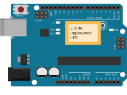

Arduino Blink Voorkennis
geen Leerdoelen
Benodigdheden
Introductie In deze opdracht ga je werken met de ingebouwde LED van een Arduino UNO.  Arduino aansluitenSluit de arduino UNO aan met de kabel op je computer. Als dit de eerste keer is vraag dan een mentor om je te helpen. Open het Blink voorbeeld programma Start de Arduino IDE en open het voor voorbeeld Blink. Je kan deze vinden in het menu File -> Examples -> 01.Basics -> Blink. Hieronder kan je zien hoe de code eruit ziet. Start het programma met de Upload button. De LED knippert nu. Uitdaging Laat de LED sneller knipperen. 
[NL] Licentie Informatie Voor al het materiaal in document geldt de licentie: Creative Commons Naamsvermelding-NietCommercieel-GelijkDelen 3.0 https://creativecommons.org/licenses/by-nc-sa/3.0/. Indien u toegang wilt tot de raw bewerkbare files om het materiaal naar uw eigen doel aan te passen, ons te helpen het materiaal te verbeteren, of het materiaal te vertalen, neem dan contact met CoderDojo Zoetermeer https://codeclub.org/en/clubs/4f8d36fb-7545-4ba9-b9fb-b379b6b87938 [EN] License Information All work in this document are licensed under the Creative Commons Attribution-NonCommercial-ShareAlike 3.0 https://creativecommons.org/licenses/by-nc-sa/3.0/. If you wish to gain access to the raw editable files in order to adapt our content to your own purposes, help us improve the content, or translate it, then please contact CoderDojo Zoetermeer https://codeclub.org/en/clubs/4f8d36fb-7545-4ba9-b9fb-b379b6b87938 .
Acknowledgements:
author(s): Ben Mens This document was created by CoderDojo Zoetermeer. The template design was inspired by the CoderDojo branding and visual identity, and incorporates elements from both organizations. We would like to thank CoderDojo Nederland for their their ongoing support of the CoderDojo community. |